Estatísticas do Servidor Web de ipbtoledo.com.br
Estatísticas do Servidor Web de ipbtoledo.com.br
Começo do programa em Sex-31-Jan-2020 09:04.
Análise de pedidos desde Qua-04-Out-2017 17:44 até Sex-31-Jan-2020 05:02 (848,47 dias).
Estatísticas do Servidor Web de ipbtoledo.com.brComeço do programa em Sex-31-Jan-2020 09:04.
Análise de pedidos desde Qua-04-Out-2017 17:44 até Sex-31-Jan-2020 05:02 (848,47 dias).
(Ir a: Início | Sumário Geral | Relatório Mensal | Resumo Diário | Resumo Horário | Relatório de Domínios | Relatório de organizações | Relatório de referência redireccionada | Relatório de referência falhada | Relatório do sítio de referência | Relatório de Leitores | Resumo de Leitores | Relatório de Sistemas Operativos | Relatório de Códigos de Estado | Relatório de Tamanho de Ficheiro | Relatório de Tipos de Ficheiro | Relatório de Directorias | Relatório de Pedidos)
Os valores entre parêntesis referem-se aos 7 dias até 31-Jan-2020 09:04.
Pedidos atendidos: 1 239 (0)
Número médio de pedidos atendidos por dia: 1
Pedidos de páginas atendidos: 37 (0)
Pedidos não atendidos: 224 (0)
Pedidos redirigidos: 44 165 (32)
Ficheiros diferentes solicitados: 1 061 (0)
Servidores diferentes atendidos: 32 (0)
Tráfego total: 1,41 megabytes (0 bytes)
Tráfego médio transferido por dia: 1,70 kilobytes (0 bytes)
(Ir a: Início | Sumário Geral | Relatório Mensal | Resumo Diário | Resumo Horário | Relatório de Domínios | Relatório de organizações | Relatório de referência redireccionada | Relatório de referência falhada | Relatório do sítio de referência | Relatório de Leitores | Resumo de Leitores | Relatório de Sistemas Operativos | Relatório de Códigos de Estado | Relatório de Tamanho de Ficheiro | Relatório de Tipos de Ficheiro | Relatório de Directorias | Relatório de Pedidos)
Cada unidade ( ) representa 1 pedido de uma página.
) representa 1 pedido de uma página.
| mês | N.ped | Pgs. | |
|---|---|---|---|
| Out 2017 | 131 | 37 |   |
| Nov 2017 | 92 | 0 | |
| Dez 2017 | 104 | 0 | |
| Jan 2018 | 99 | 0 | |
| Fev 2018 | 112 | 0 | |
| Mar 2018 | 102 | 0 | |
| Abr 2018 | 90 | 0 | |
| Mai 2018 | 102 | 0 | |
| Jun 2018 | 90 | 0 | |
| Jul 2018 | 93 | 0 | |
| Ago 2018 | 104 | 0 | |
| Set 2018 | 40 | 0 | |
| Out 2018 | 2 | 0 | |
| Nov 2018 | 13 | 0 | |
| Dez 2018 | 0 | 0 | |
| Jan 2019 | 0 | 0 | |
| Fev 2019 | 13 | 0 | |
| Mar 2019 | 0 | 0 | |
| Abr 2019 | 13 | 0 | |
| Mai 2019 | 0 | 0 | |
| Jun 2019 | 0 | 0 | |
| Jul 2019 | 13 | 0 | |
| Ago 2019 | 0 | 0 | |
| Set 2019 | 13 | 0 | |
| Out 2019 | 0 | 0 | |
| Nov 2019 | 0 | 0 | |
| Dez 2019 | 13 | 0 |
Mês mais movimentado: Out 2017 (37 pedidos de páginas).
(Ir a: Início | Sumário Geral | Relatório Mensal | Resumo Diário | Resumo Horário | Relatório de Domínios | Relatório de organizações | Relatório de referência redireccionada | Relatório de referência falhada | Relatório do sítio de referência | Relatório de Leitores | Resumo de Leitores | Relatório de Sistemas Operativos | Relatório de Códigos de Estado | Relatório de Tamanho de Ficheiro | Relatório de Tipos de Ficheiro | Relatório de Directorias | Relatório de Pedidos)
Cada unidade () representa 1 pedido de uma página.
| dia | N.ped | Pgs. | |
|---|---|---|---|
| Dom | 176 | 0 | |
| Seg | 170 | 0 | |
| Ter | 174 | 0 | |
| Qua | 179 | 7 |  |
| Qui | 174 | 7 | |
| Sex | 187 | 23 |  |
| Sab | 179 | 0 |
(Ir a: Início | Sumário Geral | Relatório Mensal | Resumo Diário | Resumo Horário | Relatório de Domínios | Relatório de organizações | Relatório de referência redireccionada | Relatório de referência falhada | Relatório do sítio de referência | Relatório de Leitores | Resumo de Leitores | Relatório de Sistemas Operativos | Relatório de Códigos de Estado | Relatório de Tamanho de Ficheiro | Relatório de Tipos de Ficheiro | Relatório de Directorias | Relatório de Pedidos)
Cada unidade () representa 1 pedido de uma página.
| h | N.ped | Pgs. | |
|---|---|---|---|
| 00 | 3 | 2 | |
| 01 | 1 | 0 | |
| 02 | 3 | 0 | |
| 03 | 3 | 1 | |
| 04 | 2 | 2 | |
| 05 | 0 | 0 | |
| 06 | 2 | 1 | |
| 07 | 1 | 1 | |
| 08 | 0 | 0 | |
| 09 | 2 | 0 | |
| 10 | 1 | 0 | |
| 11 | 5 | 1 | |
| 12 | 5 | 0 | |
| 13 | 4 | 0 | |
| 14 | 1 | 0 | |
| 15 | 5 | 1 | |
| 16 | 1 | 0 | |
| 17 | 11 | 10 |  |
| 18 | 3 | 2 | |
| 19 | 12 | 12 | |
| 20 | 1 | 1 | |
| 21 | 8 | 0 | |
| 22 | 3 | 2 | |
| 23 | 1162 | 1 | |
(Ir a: Início | Sumário Geral | Relatório Mensal | Resumo Diário | Resumo Horário | Relatório de Domínios | Relatório de organizações | Relatório de referência redireccionada | Relatório de referência falhada | Relatório do sítio de referência | Relatório de Leitores | Resumo de Leitores | Relatório de Sistemas Operativos | Relatório de Códigos de Estado | Relatório de Tamanho de Ficheiro | Relatório de Tipos de Ficheiro | Relatório de Directorias | Relatório de Pedidos)
Mostrando os domínios, ordenados por quantidade de tráfego.
| N.ped | %bytes | domínio |
|---|---|---|
| 1239 | 100% | [endereço numérico não traduzido] |
(Ir a: Início | Sumário Geral | Relatório Mensal | Resumo Diário | Resumo Horário | Relatório de Domínios | Relatório de organizações | Relatório de referência redireccionada | Relatório de referência falhada | Relatório do sítio de referência | Relatório de Leitores | Resumo de Leitores | Relatório de Sistemas Operativos | Relatório de Códigos de Estado | Relatório de Tamanho de Ficheiro | Relatório de Tipos de Ficheiro | Relatório de Directorias | Relatório de Pedidos)
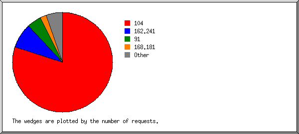
Mostrando as 20 primeiras organizações por número de pedidos, ordenadas por número de pedidos.
| N.ped | %bytes | organização |
|---|---|---|
| 1102 | 4,84% | 104 |
| 57 | 0,32% | 91 |
| 29 | 37,27% | 168.181 |
| 10 | 22,95% | 177.220 |
| 8 | 0,34% | 66.249 |
| 7 | 0,29% | 189.2 |
| 4 | 4,67% | 177.42 |
| 2 | 0,99% | 180.76 |
| 2 | 4,59% | 168.194 |
| 2 | 4,59% | 181.223 |
| 2 | 4,59% | 138.204 |
| 2 | 0,08% | 95 |
| 2 | 4,59% | 177.132 |
| 1 | 2,29% | 187.112 |
| 1 | 0,04% | 178.137 |
| 1 | 0,04% | 179.177 |
| 1 | 0,04% | 130.211 |
| 1 | 2,29% | 66.220 |
| 1 | 2,29% | 173.252 |
| 1 | 0,04% | 34 |
| 3 | 2,83% | [não listadas: 3 organizações] |
(Ir a: Início | Sumário Geral | Relatório Mensal | Resumo Diário | Resumo Horário | Relatório de Domínios | Relatório de organizações | Relatório de referência redireccionada | Relatório de referência falhada | Relatório do sítio de referência | Relatório de Leitores | Resumo de Leitores | Relatório de Sistemas Operativos | Relatório de Códigos de Estado | Relatório de Tamanho de Ficheiro | Relatório de Tipos de Ficheiro | Relatório de Directorias | Relatório de Pedidos)
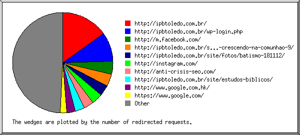
Mostrando os 30 primeiros URLs de referência por número de pedidos redireccionados, ordenados por número de pedidos redireccionados.
(Ir a: Início | Sumário Geral | Relatório Mensal | Resumo Diário | Resumo Horário | Relatório de Domínios | Relatório de organizações | Relatório de referência redireccionada | Relatório de referência falhada | Relatório do sítio de referência | Relatório de Leitores | Resumo de Leitores | Relatório de Sistemas Operativos | Relatório de Códigos de Estado | Relatório de Tamanho de Ficheiro | Relatório de Tipos de Ficheiro | Relatório de Directorias | Relatório de Pedidos)
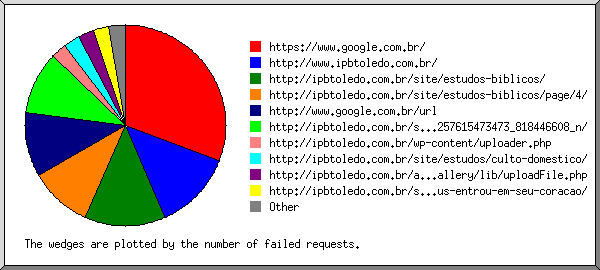
Mostrando os URLs de referência, ordenados por número de pedidos falhados.
(Ir a: Início | Sumário Geral | Relatório Mensal | Resumo Diário | Resumo Horário | Relatório de Domínios | Relatório de organizações | Relatório de referência redireccionada | Relatório de referência falhada | Relatório do sítio de referência | Relatório de Leitores | Resumo de Leitores | Relatório de Sistemas Operativos | Relatório de Códigos de Estado | Relatório de Tamanho de Ficheiro | Relatório de Tipos de Ficheiro | Relatório de Directorias | Relatório de Pedidos)
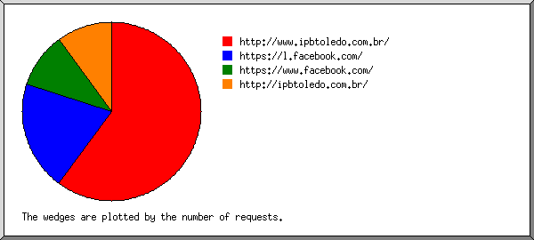
Mostrando os sítios de referência, ordenados por número de pedidos.
| N.ped | sítio |
|---|---|
| 6 | http://www.ipbtoledo.com.br/ |
| 2 | https://l.facebook.com/ |
| 1 | https://www.facebook.com/ |
| 1 | http://ipbtoledo.com.br/ |
(Ir a: Início | Sumário Geral | Relatório Mensal | Resumo Diário | Resumo Horário | Relatório de Domínios | Relatório de organizações | Relatório de referência redireccionada | Relatório de referência falhada | Relatório do sítio de referência | Relatório de Leitores | Resumo de Leitores | Relatório de Sistemas Operativos | Relatório de Códigos de Estado | Relatório de Tamanho de Ficheiro | Relatório de Tipos de Ficheiro | Relatório de Directorias | Relatório de Pedidos)
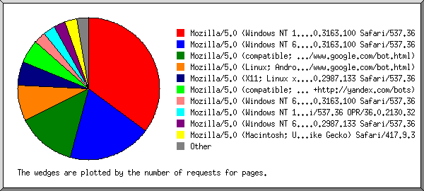
Mostrando os leitores com pelo menos 1 pedido de uma página, ordenados por número de pedidos de páginas.
| N.ped | Pgs. | Leitor |
|---|---|---|
| 13 | 13 | Mozilla/5.0 (Windows NT 10.0; Win64; x64) AppleWebKit/537.36 (KHTML, like Gecko) Chrome/61.0.3163.100 Safari/537.36 |
| 7 | 7 | Mozilla/5.0 (Windows NT 6.1; WOW64) AppleWebKit/537.36 (KHTML, like Gecko) Chrome/61.0.3163.100 Safari/537.36 |
| 5 | 5 | Mozilla/5.0 (compatible; Googlebot/2.1; +http://www.google.com/bot.html) |
| 3 | 3 | Mozilla/5.0 (Linux; Android 6.0.1; Nexus 5X Build/MMB29P) AppleWebKit/537.36 (KHTML, like Gecko) Chrome/41.0.2272.96 Mobile Safari/537.36 (compatible; Googlebot/2.1; +http://www.google.com/bot.html) |
| 3 | 2 | Mozilla/5.0 (compatible; YandexBot/3.0; +http://yandex.com/bots) |
| 5 | 2 | Mozilla/5.0 (X11; Linux x86_64) AppleWebKit/537.36 (KHTML, like Gecko) Chrome/57.0.2987.133 Safari/537.36 |
| 1 | 1 | Mozilla/5.0 (Windows NT 6.1; Win64; x64) AppleWebKit/537.36 (KHTML, like Gecko) Chrome/61.0.3163.100 Safari/537.36 |
| 1 | 1 | Mozilla/5.0 (Windows NT 10.0; WOW64) AppleWebKit/537.36 (KHTML, like Gecko) Chrome/49.0.2623.75 Safari/537.36 OPR/36.0.2130.32 |
| 1 | 1 | Mozilla/5.0 (Windows NT 6.3; WOW64) AppleWebKit/537.36 (KHTML, like Gecko) Chrome/57.0.2987.133 Safari/537.36 |
| 1 | 1 | Mozilla/5.0 (Macintosh; U; PPC Mac OS X; tr-tr) AppleWebKit/418 (KHTML, like Gecko) Safari/417.9.3 |
| 1 | 1 | Mozilla/5.0 (iPhone; CPU iPhone OS 7_0 like Mac OS X) AppleWebKit/537.51.1 (KHTML, like Gecko) Version/7.0 Mobile/11A465 Safari/9537.53 (compatible; bingbot/2.0; +http://www.bing.com/bingbot.htm) |
| 1198 | 0 | [não listados: 11 Leitores] |
(Ir a: Início | Sumário Geral | Relatório Mensal | Resumo Diário | Resumo Horário | Relatório de Domínios | Relatório de organizações | Relatório de referência redireccionada | Relatório de referência falhada | Relatório do sítio de referência | Relatório de Leitores | Resumo de Leitores | Relatório de Sistemas Operativos | Relatório de Códigos de Estado | Relatório de Tamanho de Ficheiro | Relatório de Tipos de Ficheiro | Relatório de Directorias | Relatório de Pedidos)
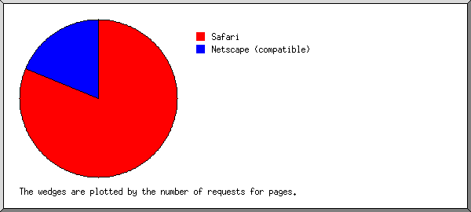
Mostrando os leitores com pelo menos 1 pedido de uma página, ordenados por número de pedidos de páginas.
| no. | N.ped | Pgs. | Leitor |
|---|---|---|---|
| 1 | 65 | 30 | Safari |
| 63 | 28 | Safari/537 | |
| 1 | 1 | Safari/9537 | |
| 1 | 1 | Safari/417 | |
| 2 | 10 | 7 | Netscape (compatible) |
| 1164 | 0 | [não listados: 3 Leitores] |
(Ir a: Início | Sumário Geral | Relatório Mensal | Resumo Diário | Resumo Horário | Relatório de Domínios | Relatório de organizações | Relatório de referência redireccionada | Relatório de referência falhada | Relatório do sítio de referência | Relatório de Leitores | Resumo de Leitores | Relatório de Sistemas Operativos | Relatório de Códigos de Estado | Relatório de Tamanho de Ficheiro | Relatório de Tipos de Ficheiro | Relatório de Directorias | Relatório de Pedidos)
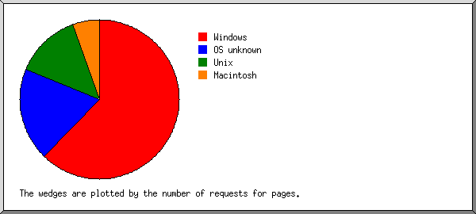
Mostrando os Sistemas Operativos, ordenados por número de pedidos de páginas.
| no. | N.ped | Pgs. | Sistema Operativo |
|---|---|---|---|
| 1 | 55 | 23 | Windows |
| 46 | 14 | Windows NT | |
| 9 | 9 | Windows desconhecido | |
| 2 | 1172 | 7 | Sistema Operativo desconhecido |
| 3 | 8 | 5 | Unix |
| 8 | 5 | Linux | |
| 4 | 2 | 2 | Macintosh |
| 5 | 2 | 0 | Robôs |
(Ir a: Início | Sumário Geral | Relatório Mensal | Resumo Diário | Resumo Horário | Relatório de Domínios | Relatório de organizações | Relatório de referência redireccionada | Relatório de referência falhada | Relatório do sítio de referência | Relatório de Leitores | Resumo de Leitores | Relatório de Sistemas Operativos | Relatório de Códigos de Estado | Relatório de Tamanho de Ficheiro | Relatório de Tipos de Ficheiro | Relatório de Directorias | Relatório de Pedidos)
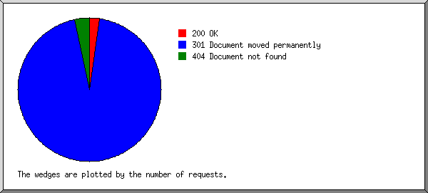
Mostrando os códigos de estado, por ordem numérica.
| N.ped | cod. estado |
|---|---|
| 1239 | 200 OK |
| 44165 | 301 Document moved permanently |
| 224 | 404 Document not found |
(Ir a: Início | Sumário Geral | Relatório Mensal | Resumo Diário | Resumo Horário | Relatório de Domínios | Relatório de organizações | Relatório de referência redireccionada | Relatório de referência falhada | Relatório do sítio de referência | Relatório de Leitores | Resumo de Leitores | Relatório de Sistemas Operativos | Relatório de Códigos de Estado | Relatório de Tamanho de Ficheiro | Relatório de Tipos de Ficheiro | Relatório de Directorias | Relatório de Pedidos)
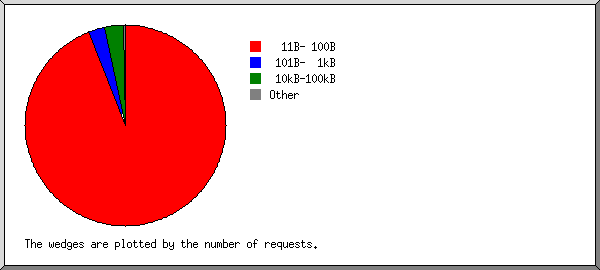
| tamanho | N.ped | %bytes |
|---|---|---|
| 0 | 0 | |
| 1B- 10B | 0 | |
| 11B- 100B | 1159 | 5,16% |
| 101B- 1kB | 37 | 1,56% |
| 1kB- 10kB | 3 | 1,49% |
| 10kB-100kB | 40 | 91,80% |
(Ir a: Início | Sumário Geral | Relatório Mensal | Resumo Diário | Resumo Horário | Relatório de Domínios | Relatório de organizações | Relatório de referência redireccionada | Relatório de referência falhada | Relatório do sítio de referência | Relatório de Leitores | Resumo de Leitores | Relatório de Sistemas Operativos | Relatório de Códigos de Estado | Relatório de Tamanho de Ficheiro | Relatório de Tipos de Ficheiro | Relatório de Directorias | Relatório de Pedidos)
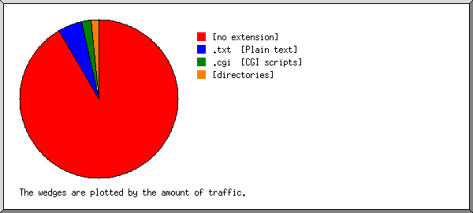
Mostrando as extensões com pelo menos 0,1% do tráfego, ordenadas por quantidade de tráfego.
| N.ped | %bytes | extensão |
|---|---|---|
| 40 | 91,80% | [extensão ausente] |
| 1159 | 5,16% | .txt [Plain text] |
| 37 | 1,56% | [directorias] |
| 3 | 1,49% | .cgi [CGI scripts] |
(Ir a: Início | Sumário Geral | Relatório Mensal | Resumo Diário | Resumo Horário | Relatório de Domínios | Relatório de organizações | Relatório de referência redireccionada | Relatório de referência falhada | Relatório do sítio de referência | Relatório de Leitores | Resumo de Leitores | Relatório de Sistemas Operativos | Relatório de Códigos de Estado | Relatório de Tamanho de Ficheiro | Relatório de Tipos de Ficheiro | Relatório de Directorias | Relatório de Pedidos)
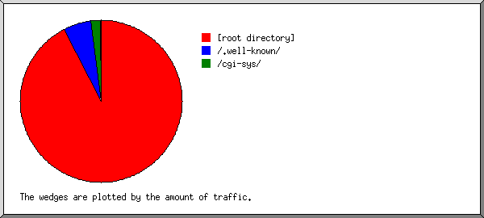
Mostrando as directorias com pelo menos 0,01% do tráfego, ordenadas por quantidade de tráfego.
| N.ped | %bytes | directoria |
|---|---|---|
| 75 | 93,28% | [directoria da raiz] |
| 1159 | 5,16% | /.well-known/ |
| 3 | 1,49% | /cgi-sys/ |
| 2 | 0,08% | /cgi-bin/ |
(Ir a: Início | Sumário Geral | Relatório Mensal | Resumo Diário | Resumo Horário | Relatório de Domínios | Relatório de organizações | Relatório de referência redireccionada | Relatório de referência falhada | Relatório do sítio de referência | Relatório de Leitores | Resumo de Leitores | Relatório de Sistemas Operativos | Relatório de Códigos de Estado | Relatório de Tamanho de Ficheiro | Relatório de Tipos de Ficheiro | Relatório de Directorias | Relatório de Pedidos)
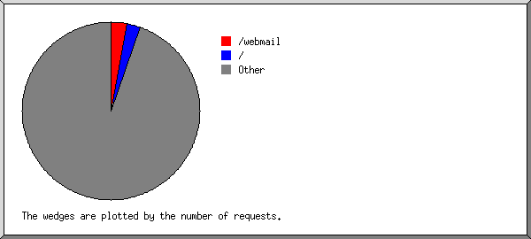
Mostrando os ficheiros com pelo menos 20 pedidos, ordenados por número de pedidos.
| N.ped | %bytes | hora ant. | ficheiro |
|---|---|---|---|
| 40 | 91,80% | 11/Out/18 23:59 | /webmail |
| 35 | 1,48% | 6/Out/17 19:51 | / |
| 1164 | 6,72% | 10/Dez/19 23:25 | [não listados: 1 054 ficheiros] |